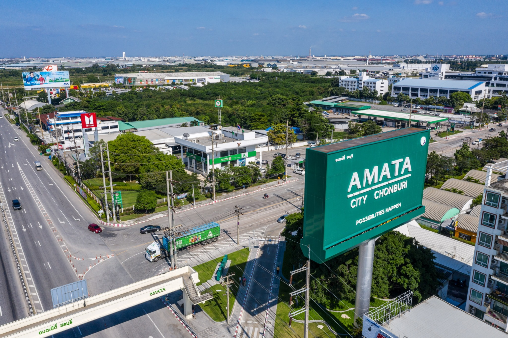
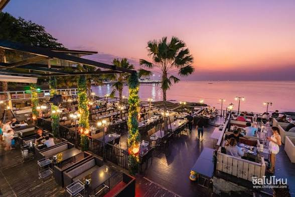
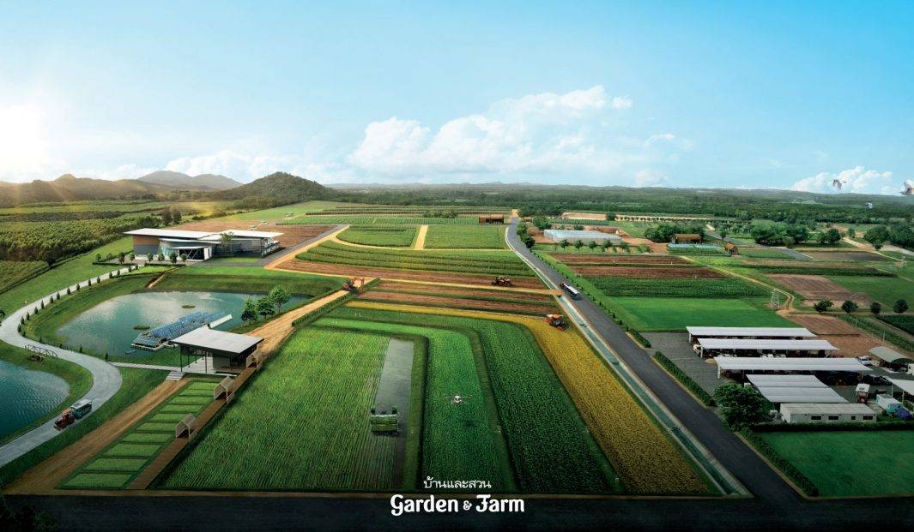

ภาคอุตสาหกรรมและนิคมอุตสาหกรรม
- มีนิคมอุตสาหกรรมสำคัญ เช่น อมตะซิตี้ ชลบุรี และปิ่นทอง
- โดดเด่นด้านการผลิตรถยนต์ ชิ้นส่วนอิเล็กทรอนิกส์ และปิโตรเคมี
- เป็นฐานการลงทุนขนาดใหญ่จากต่างประเทศ
ศูนย์กลางอุตสาหกรรม การท่องเที่ยว โลจิสติกส์ และการค้าสำคัญของภาคตะวันออก

จังหวัดชลบุรีมีเศรษฐกิจหลักขับเคลื่อนด้วยอุตสาหกรรมการผลิต นิคมอุตสาหกรรมขนาดใหญ่ และการท่องเที่ยวระดับนานาชาติ อีกทั้งยังเป็นศูนย์กลางโลจิสติกส์และท่าเรือน้ำลึกหลักของประเทศ ภายใต้เขตพัฒนาพิเศษภาคตะวันออก (EEC)



